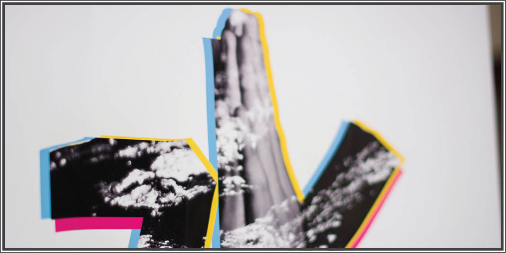
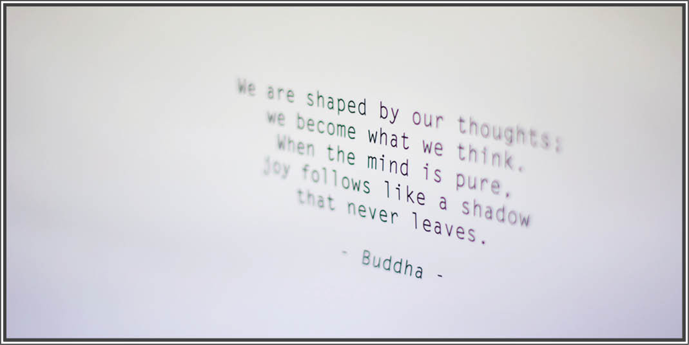
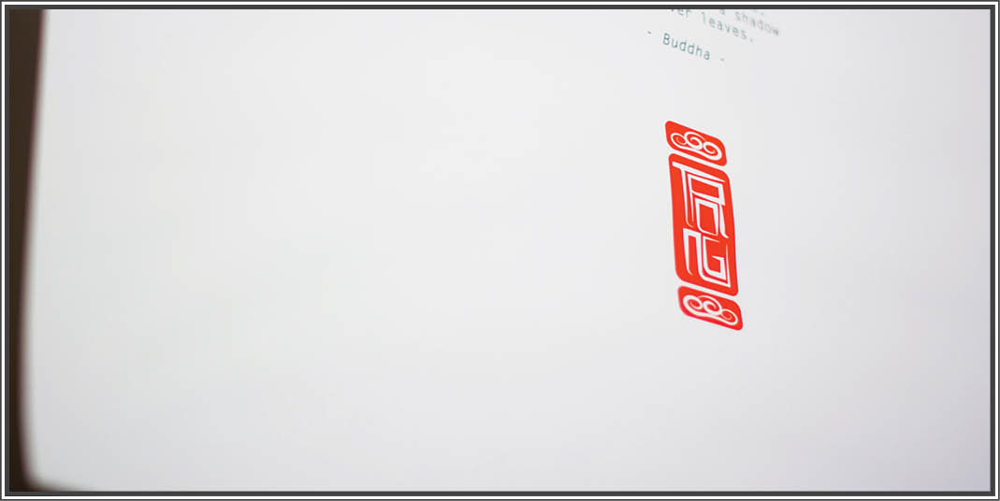

Mizu
Mizu in Japanese means Water. Water is a tasteless and formless element. Therefore, in many South East Asian cultures, water represents adaptability. I designed this poster to hang in my room as a reminder of myself being ready for changes of surroundings as well as myself.
"Namaskar" hand gesture represents opening my soul to happiness. Meanwhile the hand gesture is also double exposed with water background to strengthen the philosophical idea behind Water.
"We are shaped by our thoughts; we become what we think.When the mind is pure, joy follows like a shadow that never leaves."-Buddha-
